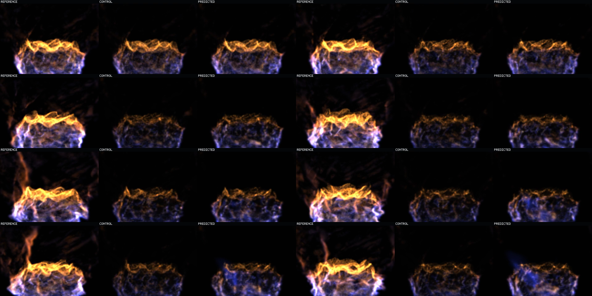
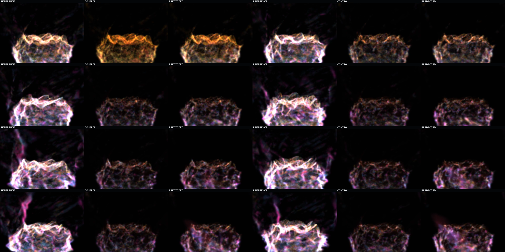

Question: Can a motion-balanced local-grid occupancy model preserve the support that carries visible fire phase, rather than learning only slow cells?
Verdict: Support selection materially improves and the upper flame sheet survives. Large-scale state evolution still drifts: the prediction misses the rising reference plume and accumulates lower-left support over recurrence.
Every panel: left = exact held-out reference, middle = copied-current control, right = frozen recurrent prediction.
Static Q1/Q2 cells are attenuated to 0.1 and unmatched support to 0.05, exposing phase-bearing Q3/Q4, transported, and birth support. Watch the reference's tall plume and changing envelope, then compare the prediction's persistent but lower, slower orange rim and late blue lower-left accumulation.
This is the same state sequence and cadence with a display-only mix. Green is Q1/Q2, yellow Q3, red Q4, blue transported, magenta birth, and orange unmatched/death. The prediction carries more motion-bearing color than control after the first step, but it does not send support into the reference's tall plume.
The sheet is row-major at simulator times 0.16, 0.48, 1.12, 2.08, 4.16, 6.24, 8.16, 10.08 seconds. Each tile retains the same left/middle/right role labels. This is one continuous episode, not a set of unrelated frames.

Use the same row-major times. The decisive late failure is not blankness: predicted support remains active, but blue and magenta support thickens in the lower-left region while the exact reference develops a tall, changing plume.

| Cohort | Prior support | New support | Prior energy | New energy |
|---|---|---|---|---|
| stable-q3 | 0.2115 | 0.3101 | 0.1619 | 0.2846 |
| stable-q4 | 0.1635 | 0.2891 | 0.1001 | 0.2394 |
| transported | 0.1234 | 0.1975 | 0.0894 | 0.1911 |
| birth | 0.1021 | 0.1519 | 0.0940 | 0.1892 |
Failure boundary: prediction count grows from 60,259 to 93,365 while the exact final count is 70,612. The support redirect worked, but recurrent count and state evolution are not yet trustworthy.
Model e51c23d25eb38ec778c65774aae46c78bbcb02808d582539843417b10043c073, MLX Device(gpu, 0), separate 13-frame training and 64-frame evaluation episodes, native 3D compute-fluid route, no fallback. This isolated splat witness does not establish analytical-raymarch image agreement, multi-basin generalization, or live runtime integration.